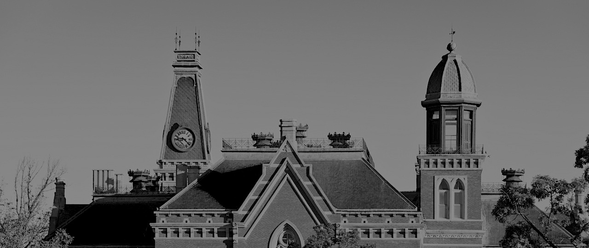

Nice to meet you!
My name is Erica Pereira and I am currently an undergrad at DePauw University. I am working on my Bachelors of Arts in Computer Science and I am expected to graduate May 2020. If you would like to know more about my professional experience navigate to my experience page!Let's get personal

"Bienvenidos a La Villita", Chicago, IL